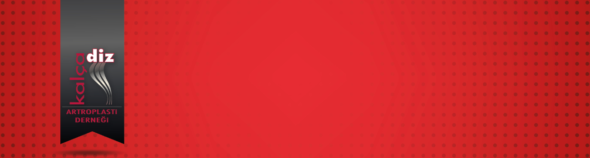

Değerli Meslektaşlarımız,
XVI. Temel Artroplasti Kursu 11-12 Aralık 2020 tarihlerinde online olarak düzenlenecektir.
Aralık ayı başında programdaki tüm sunumlar portale yüklemeyi planlıyoruz, katılımcılar bu portal üzerinden sunuları kurs öncesi izleyebilecekler.
Tüm sunuları izleyen katılımcılar, bu konulara ilişkin önemli noktaları içeren 30 soruluk kısa bir online değerlendirmeye tabi tutulacak ve du değerlendirme sonrası 11-12 Aralık’ta yapılacak canlı bağlantılar ile vaka üzerinden tartışma ve model kemikler üzerinde detaylı, çimentolu ve çimentosuz kalça ile total diz protezi uygulamalarını izleyebilecekler. Değerlendirmenin amacı verilmek istenilen mesajların alındığından ve kursun amacına ulaştığından emin olabilmektir.
-Kayıtlı derslerin izlenmesi 01 Aralık – 10 Aralık 2020
-Canlı oturumlar 11 Aralık – 12 Aralık 2020
-Henüz ilgili konuşmacı tarafından kaydı yapılmamış videoların kısa zamanda sisteme eklenmesi için çalışma sürdürülmektedir.
Ayrıca kursiyerlerimiz, mevcut sunumlara kurs sonrasında da KADAD eğitim sayfasından ulaşıp, merak ettikleri konulara ilişkin sunuları sınırsız izleme hakkına sahip olacaklar.
Kalça Diz Artroplasti Derneği tarafından düzenlenen bu kurs sonrasında verilecek sertifika uzman ve kıdemli asistanlarımızın Temel Artroplasti Eğitimi aldıklarını belgelemeleri açısından önemlidir.
Artroplastiye gönül vermiş ve bu konuda kendini geliştirmek isteyen tüm meslektaşlarımızı, çok değerli hocalarımızın katkılarıyla gerçekleşecek olan kursumuza davet ediyoruz.
Program'a ulaşmak için tıklayınız
Prof Dr Turhan Özler Kurs Başkanı
Prof Dr Bülent Atilla KADAD Başkanı
